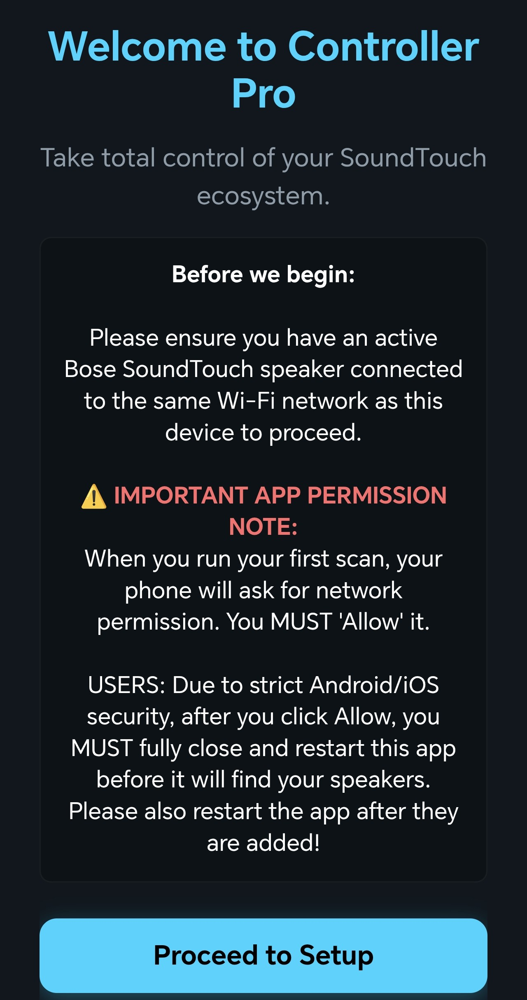
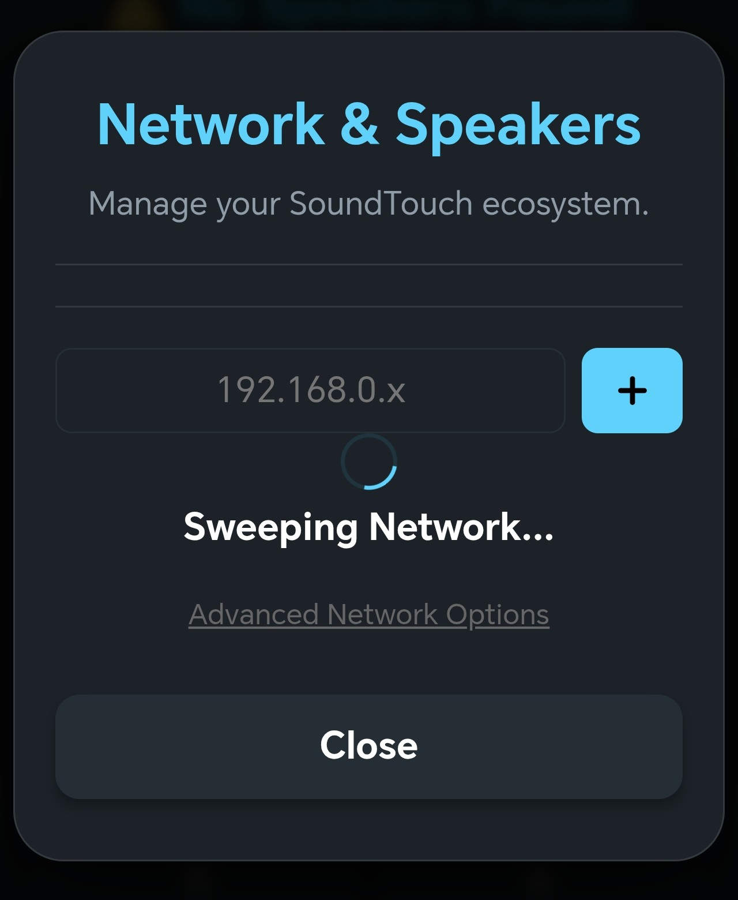
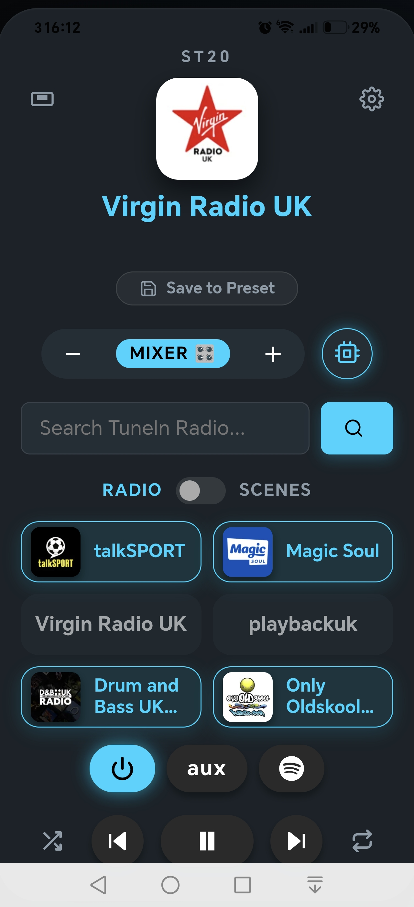
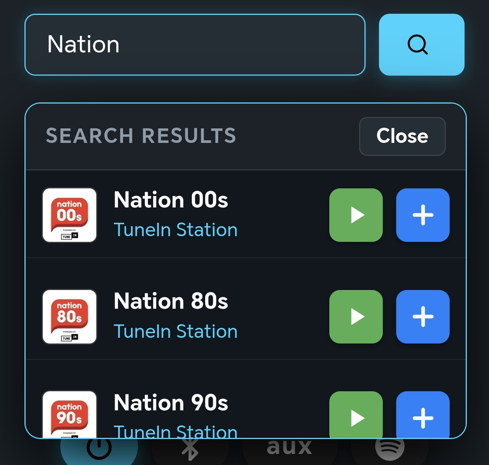
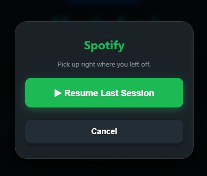
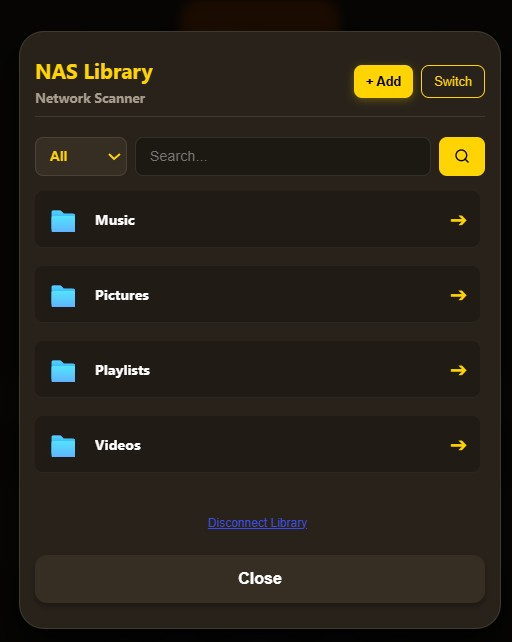
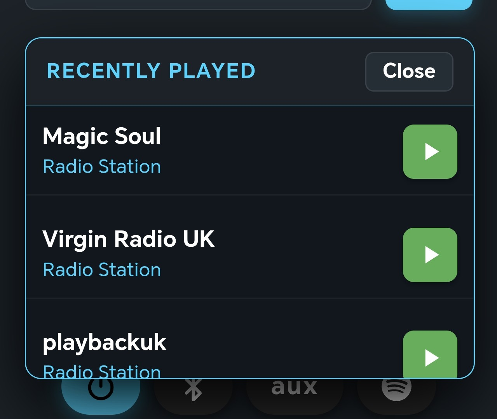
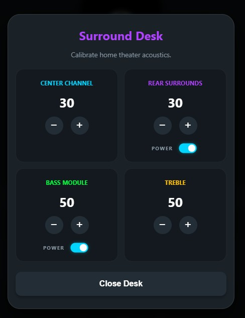

To keep packaging lean for this run, physical paper manuals are not included. Your browser can translate this guide natively into your preferred language.
1. Network: Connect the included Ethernet cable from your home router directly into the Controller Cube.
2. Power: Connect the USB-C cable to power up the Cube (requires standard 5V 2A).
3. Wait 60 Seconds: The Cube needs approximately one minute to boot up and secure its connection to your local network. That is it!
This simple process must be repeated once for each Bose SoundTouch speaker in your home.
If your speaker only has a "SERVICE" port: Attach the Micro-USB OTG adapter to the USB drive and plug it directly into the SERVICE port.
If your speaker has "SETUP A - B" ports: Use the standard USB-A end of the drive and plug it directly into SETUP B (ignore Setup A completely).
Reboot: Simply reboot the speaker with the USB drive inserted so it can read and adopt the configuration.
1. Remove the USB Drive: Once your speaker has fully rebooted and the status lights have settled, the adoption is permanent (unless the speaker is ever factory restored). You can safely unplug and remove the USB drive.
2. Open the Controller Pro App: Launch the app on your smartphone or tablet.
3. Automatic Discovery: The app will instantly detect your Controller Cube on the network, sync your speakers, and automatically unlock all Pro features (Native Radio, NAS, and Stereo Pairing).
When you first launch the app, ensure your phone is connected to the same Wi-Fi network as your Bose SoundTouch speakers. You must grant the local network permissions for the app to function.

The app will automatically sweep your network to find your speakers and bind then to the app and the Cube.

Your core command center. Access your 6 hardware presets and your unlimited local app presets right from the home screen.

Search global internet radio stations natively. Tap the '+' icon to save a station directly to a preset.

Use the Spotify modal to instantly resume your last session without leaving the Controller Pro app.

Tap the 'Add' button to seamlessly inject your local network drives or DLNA servers into the app for physical remote playback.

Quickly jump back into your favorite streams and media using the Recents view.

If you are using a compatible Soundbar, calibrate your center channel, rear surrounds, and bass module directly from the desk.
